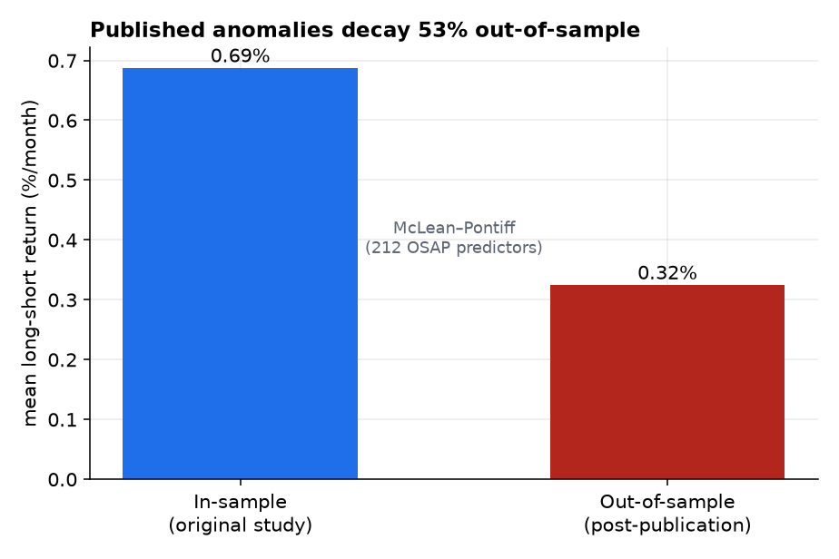
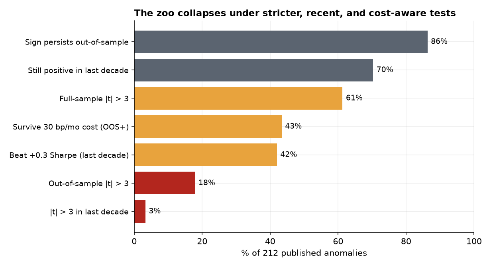
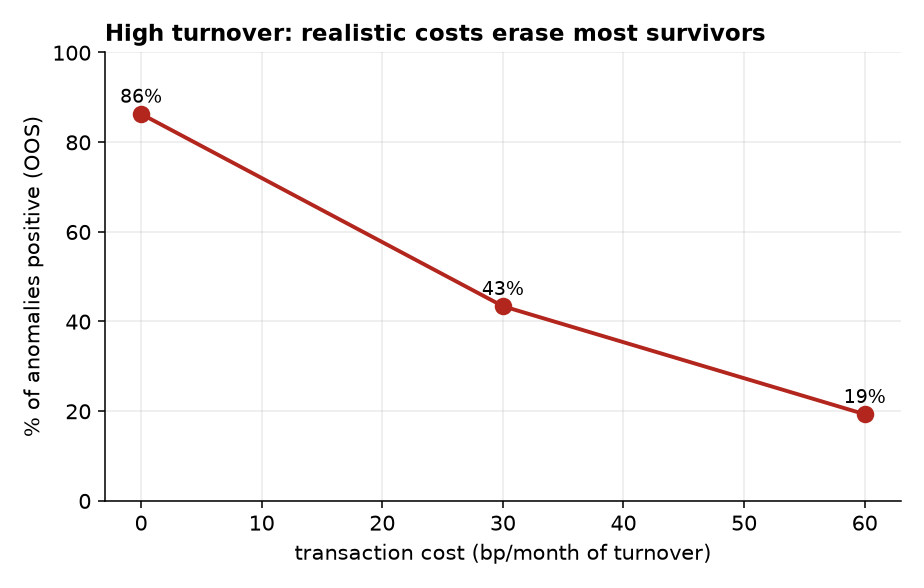
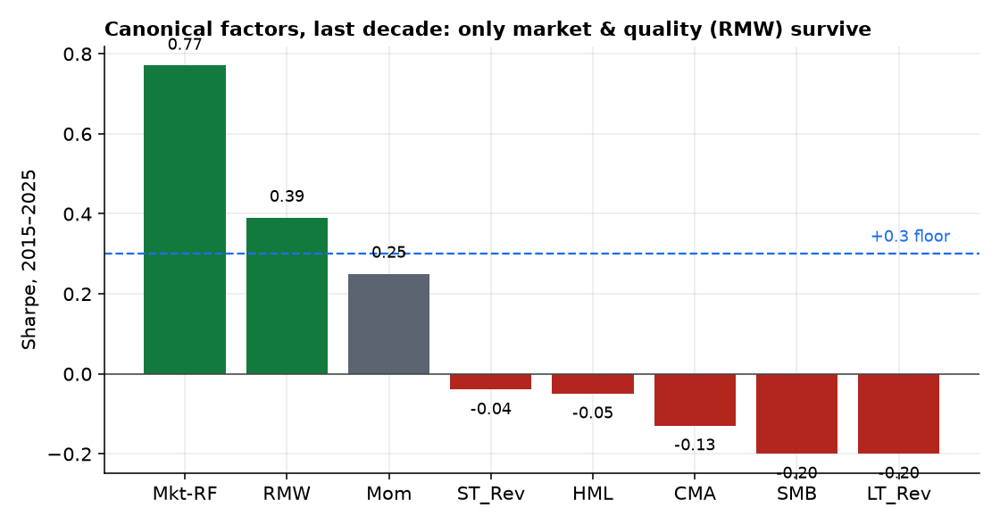

The cross-sectional “factor zoo” — hundreds of published anomalies — is the obvious place to look for directional alpha. We audit it honestly, out-of-sample and net of costs, using the 212 published predictors of the Open-Source Asset Pricing dataset (Chen–Zimmermann) plus the Ken French factors, and we cross-check on our own equity and crypto data. The headline is a replication crisis. The 212 predictors decay 53% out-of-sample (in-sample 0.69%/month → 0.32%/month), almost exactly matching McLean–Pontiff. The publication t>2 bar is far too lax — only 61% clear |t|>3 full-sample (median |t| = 3.4). In the most recent decade the median anomaly has a Sharpe of just 0.22 (below our +0.3 floor), only 3% are statistically strong (|t|>3), and because these equal-weight long-shorts are high-turnover, a realistic cost of 30 bp/month of turnover leaves only 43% even positive. Among the canonical Fama–French factors, only the market (Sharpe 0.77) and profitability/quality (RMW, 0.39) clear the floor over 2015–2025; value, size, investment, momentum, and reversal are dead or marginal. Our own data concurs: momentum is dead net of cost, low-vol is negative, and the only positives are short-term reversal (a liquidity-provision premium) and crypto short-horizon trend. For a participant who actually pays costs, the directional zoo is mostly a selection-and-publication artifact; the lone robust survivor is low-turnover quality.
Academic finance has published hundreds of cross-sectional return predictors — value, momentum, size, low-volatility/BAB, profitability, reversal, and a long tail of others. If durable directional alpha exists, it should be here. But three forces conspire against the headline numbers: post-publication decay as the trade gets crowded [1], multiple-testing inflation of in-sample significance [2], and transaction costs on high-turnover portfolios [5]. This paper quantifies all three on the most comprehensive open dataset available, then checks the verdict on our own data. Following the series (Paper 1: a real premium, untradable; Paper 2: a thin premium, tradable; Paper 3: an illusory edge), we pre-register:
Part A (authoritative): the Open-Source Asset Pricing dataset [4] — 212 published predictors as monthly equal-weight-decile long-short returns (1926–2024), each tagged with its original in-sample window and t-stat — plus the Ken French factors (through 2026). Part B (our data): price-based factors on the FnSpID daily panel (2016–2020; news+price, no fundamentals locally) and the top-30 crypto daily panel (2023–2026). Leakage control: the out-of-sample window for each predictor begins strictly after its published sample-end year, so “OOS” is genuinely post-discovery; our-data factors are walk-forward (signal lagged one day). Caveat: the OSAP long-shorts are gross and high-turnover, so the net-of-cost analysis imposes its own cost model (below) — if anything conservative, since EW-decile shorts in small-caps are the most expensive to trade.
For each predictor we measure: in-sample vs out-of-sample mean return and t-stat (the McLean–Pontiff decay); full-sample |t| against the multiple-testing-aware |t|>3 hurdle [2]; recent-decade (2015–2024) Sharpe and significance; and a net-of-cost test that subtracts a flat per-month turnover cost (these portfolios rebalance monthly with high turnover, so we sweep 0/30/60 bp/month). Our-data factors are standard cross-sectional dollar-neutral long-shorts (top vs bottom tercile) net of 10 bp/side. The bar for “alive” is the +0.3-Sharpe mean-reversion floor and |t|>3, not the journal's |t|>2.
Across the 212 predictors, the mean long-short return falls from 0.69%/month in-sample to 0.32%/month out-of-sample — a 53% decline (Figure 1), almost exactly McLean–Pontiff's famous estimate. The sign mostly survives (86% stay positive OOS), but statistical strength does not: only 34% keep |t|>2 and 18% keep |t|>3 out-of-sample.

Stack the hurdles and the zoo evaporates (Figure 2). Of the 212 predictors that were, by definition, significant in publication: 61% clear |t|>3 full-sample; 43% survive a 30 bp/month cost; 42% beat the +0.3 Sharpe floor in the last decade; 18% keep |t|>3 out-of-sample; and just 3% are statistically strong (|t|>3) in the most recent decade. The median recent-decade Sharpe is 0.22 — below the floor a small shop should bother with.

The kill is largely turnover. These EW-decile long-shorts rebalance monthly; at a realistic 30 bp/month the positive fraction drops from 86% to 43%, and at 60 bp/month to 19% (Figure 3). Costs, not signal, decide — exactly the Novy-Marx–Velikov finding [5].

The Fama–French factors over 2015–2025 tell the same story cleanly (Figure 4): only the market (Sharpe 0.77) and profitability/quality (RMW, 0.39) clear the floor. Value (HML −0.05), size (SMB −0.20), investment (CMA −0.13), momentum (0.25), and reversal (−0.04) are dead or marginal in the last decade. Quality is the lone survivor — and, not coincidentally, the lowest-turnover of the bunch.

Built from scratch on our data, net of 10 bp/side, the classic directional factors fail and the survivors are exactly the ones the rest of this series flagged:
| Factor (our data) | Net Sharpe | Gross | Verdict |
|---|---|---|---|
| Equity momentum 12-1 (2016–20) | −0.01 | 0.03 | dead (no edge even gross) |
| Equity low-vol (2016–20) | −0.92 | −0.91 | negative |
| Equity news-sentiment, contrarian | −0.46 | −0.43 | negative |
| Equity short-term reversal (2016–20) | +0.86 | 1.15 | liquidity provision; cost-fragile* |
| Crypto momentum 30d (2023–26) | +0.53 | 0.61 | short-horizon trend survives |
| Crypto reversal 7d (2023–26) | −0.47 | −0.26 | negative |
*Equal-weight, small-cap-tilted, high-turnover; 10 bp/side is optimistic for small-caps — properly the subject of Paper 5 (liquidity provision).
The factor zoo is not fraud; it is a predictable consequence of how research is produced and consumed. Publication selects for low in-sample p-values; with hundreds of tries, many clear |t|>2 by chance. Disclosure then crowds the genuine ones, halving their premium. And the academic long-short ignores the costs that, on high-turnover portfolios, consume most of what remains.
For a participant who actually pays costs, the directional anomaly zoo is mostly a selection-and-publication artifact. ~Half the premium decays post-publication, the median anomaly is sub-floor in the last decade, the t>2 bar fails multiple testing, and turnover costs erase most of the rest. The lone robust survivor is low-turnover quality.
This completes the directional half of the program, and it rhymes with the rest. The one equity factor that pays on our data — short-term reversal — is not a directional forecast but a liquidity-provision premium (Paper 5). The one crypto factor that pays — short-horizon trend — echoes Paper 2's funding cross-section. And quality, the lone zoo survivor, wins precisely because it is cheap to hold. Across four papers the throughline is unmistakable: in markets this efficient, out-of-sample discipline and honest cost modeling are the alpha — they are what separate the handful of real edges from the hundreds of fake ones.
Cost model. OSAP returns are gross EW-decile long-shorts; we impose a flat per-month turnover cost rather than each predictor's measured turnover, so the net figures are illustrative (though conservative — these are the most expensive portfolios to trade, and the dedicated net-of-cost OSAP/Chen–Velikov variants reach similar conclusions). Our-data equity ends 2020. The FnSpID price panel stops in 2020, so Part B's equity window is 2016–2020; the recent decade is covered authoritatively by the French factors (through 2025). No fundamentals locally. Value/quality/size are audited via published returns, not rebuilt on our names. Scope. We test the published zoo and standard constructions; a machine-learned combination of weak signals (net of costs and honestly cross-validated) is the one direction with a non-trivial prior, but prior in-house work and the literature both suggest the costs and decay documented here dominate. Quality/profitability — the survivor — deserves a dedicated, cost-and-capacity-aware follow-up.